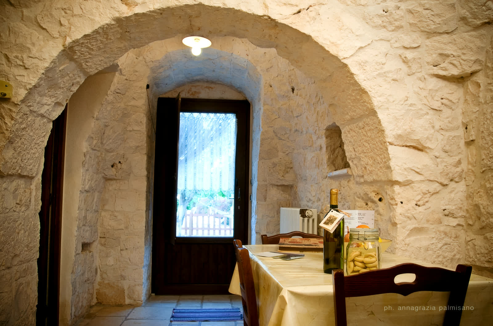
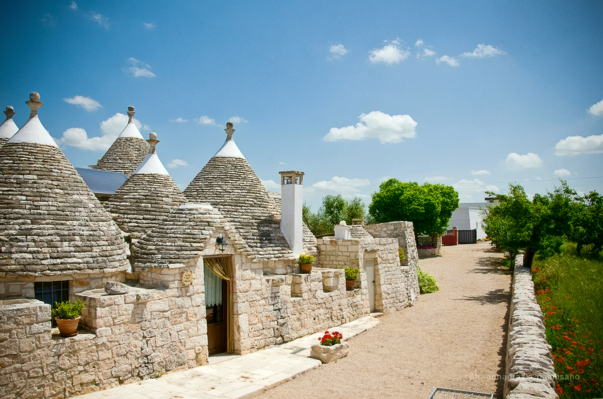
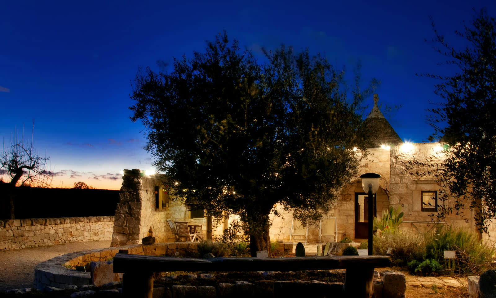
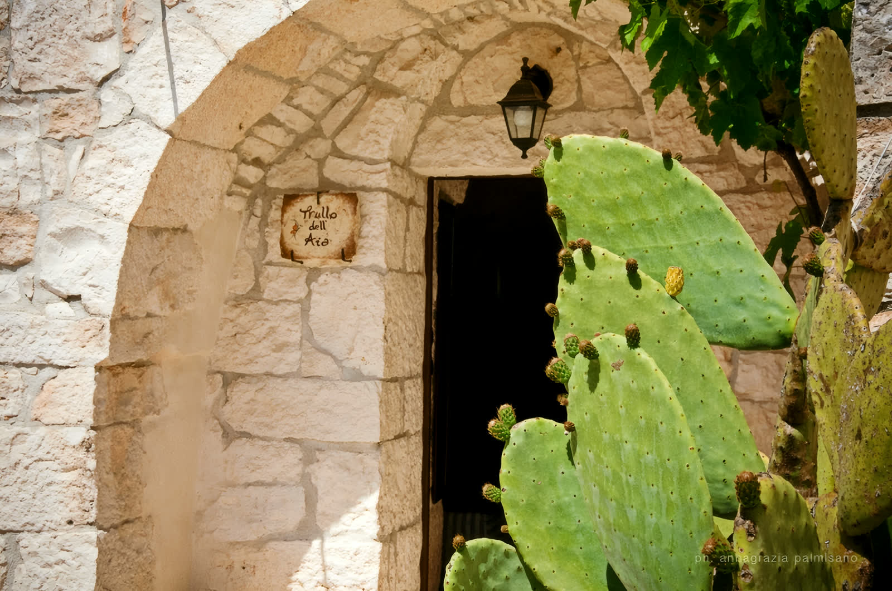
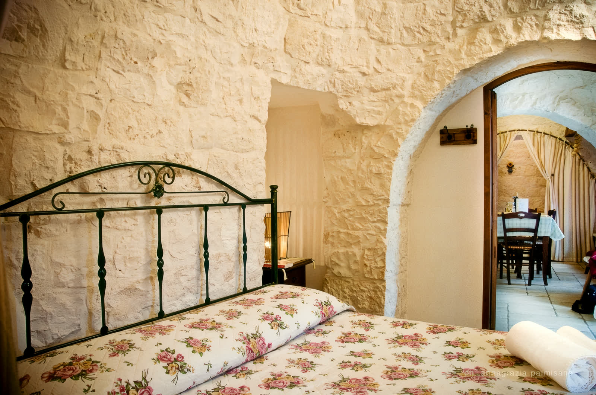
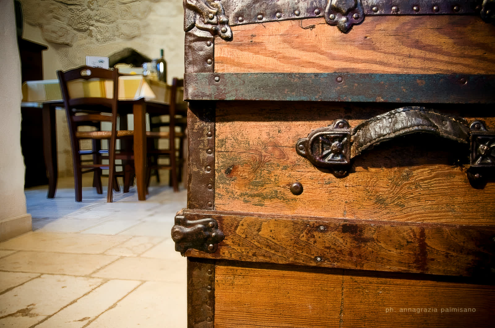
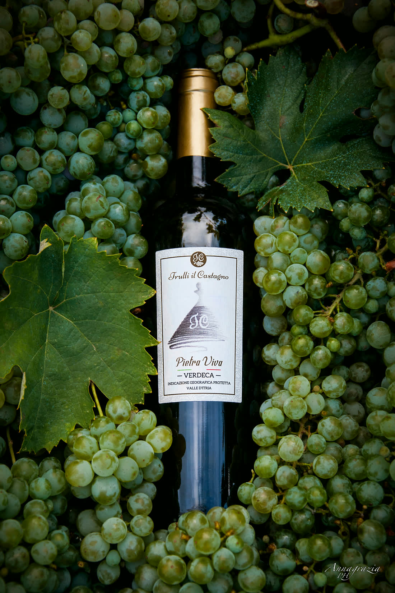

Trullo del Ciliegeto
2 posti · 1 cameraUna camera con divano letto per un bambino, l'ingresso sul lato della piscina. Il trullo giusto per una coppia.

Country house · Martina Franca · Valle d'Itria
Quattro trulli dei primi dell'Ottocento su una collina che domina la Valle d'Itria. La piscina fra gli ulivi, la vigna di famiglia e la cucina di casa.
La casa dei nonni
Fino agli anni Settanta questi trulli erano la casa dei nonni di Beatrice. Oggi la famiglia Spalluto li apre a chi arriva in Valle d'Itria.
Un antico trullo di campagna costruito agli inizi dell'Ottocento, al centro di una piccola contrada con la sua grande aia in pietra. Dopo una lunga ricostruzione, l'attività ha aperto le porte a Natale del 2007: quattro alloggi, ognuno col suo nome e il suo carattere.
La contrada
C'era un'aia grande, dove si lavoravano il grano e i legumi dei vicini.
La contrada viveva attorno a quest'aia in pietra. Pietro ha guidato la ricostruzione dei trulli, pietra su pietra; Beatrice ha riportato in cucina i gesti di casa. La sera le luci si accendono sui coni e la campagna si ferma.

Gli alloggi
Ogni trullo è indipendente e prende il nome da ciò che gli sta attorno. Biancheria, pulizie, Wi-Fi e Netflix sono compresi; la piscina è aperta da maggio a metà ottobre.

Una camera con divano letto per un bambino, l'ingresso sul lato della piscina. Il trullo giusto per una coppia.

Affaccia sull'ingresso della contrada: l'aia in pietra, il gazebo e il forno a legna. Due divani letto per i più piccoli.

Sette archi in pietra e il camino: è il trullo che gli ospiti considerano il più bello della contrada.

Il più grande della contrada: due camere da letto e lo spazio giusto per una famiglia o due coppie.
Le giornate in contrada
Passeggiata fra i filari della vigna di famiglia e degustazione dei vini aziendali. Pietro la vigna la conosce pianta per pianta.
Focaccia, pane, purè di fave, orecchiette e involtini di vitello: le mani in pasta con chi questi piatti li fa da sempre.
Preparata in casa e servita nel trullo o in giardino. Su richiesta, come la colazione col cestino consegnato la sera prima.

La cantina di famiglia
«Avevo sete, bussai al trullo
apparve un angelo con un calice di Verdeca»
Quattro generazioni in vigna, la gestione dal 2009, e una linea naturale, la 1929: senza lieviti aggiunti, non filtrata, con solfiti dieci volte sotto il limite di legge.
Prezzi dal listino pubblicato sul sito dell'azienda.
I servizi
Aperta da maggio a metà ottobre, con lettini e ombrelloni, senza orari di chiusura.
Su richiesta, €4 a persona: consegnata la sera prima con marmellate di casa, dolci, frutta e pane fresco. Anche per celiaci.
Noleggio in loco: bici classica €12 al giorno, e-bike €25. La Valle d'Itria è fatta per pedalare.
Di piccola, media e grande taglia: la contrada è anche loro.
Passeggiata in carrozza trainata dai cavalli Lipizzani bianchi, fra i muretti a secco.
Da Bari o Brindisi: €60 a tratta fino a 4 persone, su prenotazione.
Compresi nel soggiorno, in ogni trullo.
Barbecue con la legna e, di stagione, i prodotti dell'orto di casa.
141 recensioni su TripAdvisor
La contrada in foto
Prenota il tuo soggiorno
Scriveteci o chiamateci: vi rispondiamo noi della famiglia, e troviamo insieme il trullo giusto per il vostro soggiorno.